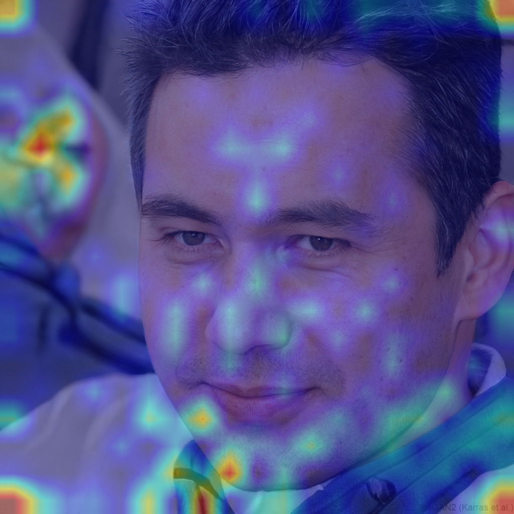

Multimodal fake-profile detection with explainable AI — fusing image, text and metadata signals into a single, auditable trust score.
Diffusion models and large language models now generate profile photos and bios indistinguishable from real ones to the human eye. Traditional checks — captchas, "does this look like a real face?", phone verification — were never designed for this threat model.
Fake profiles power romance scams, financial fraud, election interference and harassment campaigns. Detection systems today look at one modality at a time — and an attacker only needs to beat that one.
| Approach | Best model class | Reported ceiling | What it can't do |
|---|---|---|---|
| Deepfake / GAN-face detection | XceptionNet, EfficientNet, ResNet on FaceForensics++ | 90–97% | Collapses on out-of-distribution generators & compressed social media images |
| AI-text detection | RoBERTa / OpenAI Detector, ChatGPT detector | 95%+ on training distribution | Paraphrasers and short bios destroy confidence |
| Metadata-only forensics | EXIF anomaly, ELA, CFA artifacts | Heuristic | Pure metadata detectors fail when EXIF is stripped. Our system uses metadata as one signal among three and falls back gracefully when absent |
| Single-modality fake-profile systems | One CNN or one text classifier | — | No explanations, no fallback, no cross-modal consistency check |
A profile is dispatched to three independent analysis modules, each an ensemble. Module outputs (score, confidence, evidence) are aggregated by a weighted fusion engine into a single calibrated trust score T ∈ [0,1].
The image is normalised and resized for each backbone, then routed through three classifiers whose softmax probabilities are blended with empirical weights. The dominant signal is EfficientNet-B7 (50%), backed by XceptionNet (40%) — the gold-standard deepfake detector — and CLIP ViT-B/32 (10%) for general vision-language sanity checking. YOLOv8 face-cropping runs when a face is detected and falls back to whole-image analysis otherwise.
A Grad-CAM heatmap is generated against the final convolutional layer and overlaid on the input crop — telling the reviewer which pixels drove the decision (eye region, hairline, skin texture, asymmetry).

Bios are tokenised and scored by an ensemble of two transformer classifiers and a rule-based linguistic detector. The dominant signal is the OpenAI RoBERTa AI-text detector (70%), supported by the ChatGPT-detector (20%) for GPT-family outputs, with a rule-based heuristic (10%) catching obvious patterns the transformers miss.
SHAP/LIME assigns an importance score to each token, surfaced in the UI as highlighted phrases — the reviewer sees the exact words that triggered the verdict, not just a number.
Generated images rarely carry a consistent EXIF chain. The metadata module reads every available EXIF field and, crucially, examines what is missing. It scores four independent forensic signals and fuses them into a value in [0, 1]. When an uploaded image has its EXIF stripped, which is common on social platforms, the adaptive weights on slide 12 take over and the fusion proceeds on image and text alone.
Every model runs locally. No third-party API calls. ~300 MB of weights download on first run; ~2–3 GB runtime on CPU, less on GPU.
// POST /api/v1/analyze/profile { "profile_id": "unknown", "timestamp": "2026-05-08T14:50:00Z", "image_analysis": { "score": 0.18, "confidence": 0.92, "prediction": "fake", "explanation": { /* Grad-CAM, indicators */ } }, "text_analysis": { "score": 0.41, "confidence": 0.74, "prediction": "ai", "explanation": { /* LIME tokens */ } }, "final_trust_score": 0.27, "trust_level": "low", "interpretation": "Low trust — likely AI-generated...", "processing_time_ms": 4172.5 }
| Predicted | ||
|---|---|---|
| fake | real | |
| True fake | 19 TP |
11 FN |
| True real | 8 FP |
21 TN |
| Predicted | ||
|---|---|---|
| AI | human | |
| True AI | 47 TP |
3 FN |
| True human | 40 FP |
10 TN |
A multimodal, explainable, locally-runnable fake-profile detector — honest about what it can and can't see today and architected to keep improving.